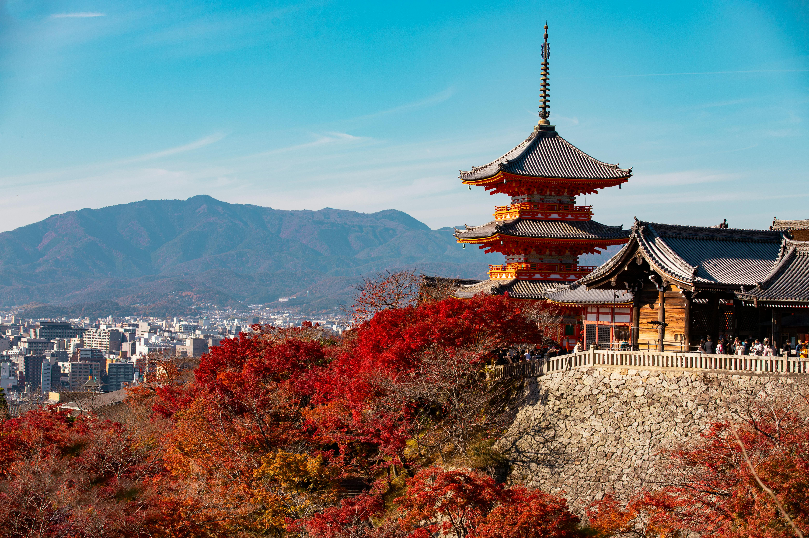
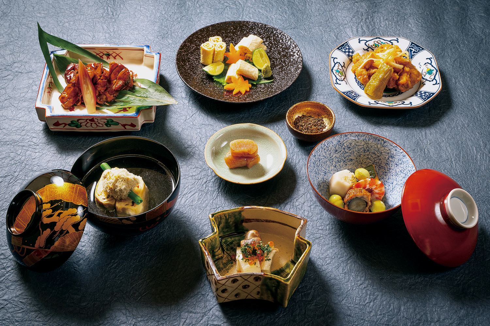
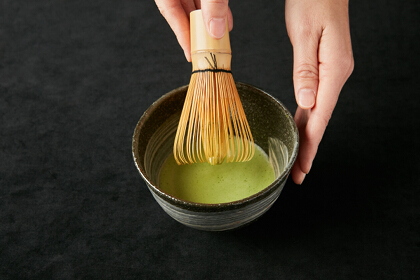

WORLD HERITAGE
清水寺 Kiyomizu-dera
清水寺始建於西元 778 年，擁有超過 1200 年的悠久歷史。作為供奉觀音菩薩的靈場，這裡長久以來一直對所有階層的市民開放，體現了廣大的慈悲之心。
-
音羽之瀧 (Otowa Waterfall) 清泉分為三道，分別代表「學業成就」、「戀愛成就」與「長壽延命」。遊客可擇一飲用，據說太貪心喝下全部反而會失靈。
-
清水舞台 (Kiyomizu Platform) 由 168 根巨大的圓柱支撐，全程不使用一根釘子，僅以卡榫工法組裝而成，能俯瞰京都四季的絕美景致。
-
地主神社 (Jishu Shrine) 著名的京都求緣勝地。若能閉眼走過兩塊「戀愛占卜石」之間，傳說良緣便會順利降臨。
-
清水坂 (Kiyomizu Zaka) 通往寺院的繁華街道，沿途佈滿茶屋與餐廳，特別推薦品嚐京都著名的「生八橋」麻糬。

CULINARY ART
京懷石料理：四季流轉的盤中詩
這不只是食物，更是職人對旬味（時令）的極致追求，每一道菜都是一件藝術品。 京懷石料理，是一場關於季節、器皿與心境的深度對話。起源於茶道中的「旬」之美學，懷石料理嚴選當季最新鮮的食材，不僅追求味道的純粹，更講究視覺上的平衡與意境。每一道菜品的擺盤都如同一幅微縮的山水畫，映射出大自然的時節更迭。 從溫潤開胃的先附，到展現刀工的造里，職人們在靜謐的空間裡，將京都的歷史與自然濃縮於盤中。在富有歷史感的町家建築中細品懷石，不僅是舌尖上的享受，更是一種放慢步調、感受日本職人「誠心款待（Omotenashi）」精神的極致儀式。

TEA CEREMONY
宇治抹茶：碧綠山間的苦甜餘韻
越過宇治川的微風，帶領旅人走入茶香繚繞的起源地。身為日本頂級綠茶的代名詞，宇治抹茶以其翠綠奪目的色澤與層次豐富的苦甜感聞名於世。從傳統茶室裡手刷出的綿密泡沫，到現代創意市集中的抹茶甜品，這抹碧綠已成為京都最優雅的色彩符號。 啜飲一杯道地的宇治抹茶，先是微苦的草木清香，隨後而來的是在喉間散開的甘醇餘韻。在這片古老的土地上，每一片茶葉都經過時間的陳放與職人的精心研磨，讓這份傳承數百年的茶文化，在現代的時光中依然散發著令人心安的靜謐力量。
